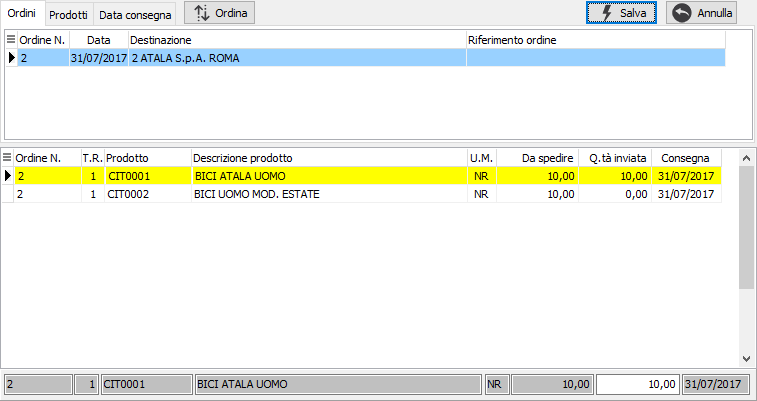
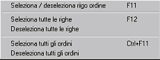

Evasione ordini clienti
L'evasione degli ordini da parte delle liste di prelievo ha come filtro sempre il codice del cliente.
Se per lo stesso cliente sono stati inseriti più ordini con destinazioni e/o divise diverse viene visualizzata una finestra che permette all'utente di specificare quali di questi ordini utilizzare per la selezione.
In questa finestra è possibile specificare una singola destinazione da utilizzare per selezionare gli ordini del cliente. Dopo aver inserito i criteri necessari e premuto il pulsante Esegui, gli ordini selezionati vengono visualizzati nella finestra di evasione.
Nel caso in cui esistano ordini da evadere per il cliente tutte con la stessa destinazione viene direttamente richiamata la finestra di evasione.

La finestra è suddivisa in due sezioni.
Nella sezione superiore sono presenti i riferimenti agli ordini da evadere che possono essere ordinati e visualizzate per ordine, per prodotto oppure per data consegna. Selezionando un elemento in questa sezione, tramite il mouse o spostandosi con le frecce, nella parte sottostante vengono visualizzati i dettagli delle righe relative.
Nella sezione inferiore è possibile scegliere quali righe, e con quali quantità, inserire nel documento.
La selezione e l'annullamento della stessa può avvenire in diversi modi. Per selezionare oppure annullare la selezione di un rigo è sufficiente fare doppio clic con il mouse sul rigo interessato (se

selezionato verrà annullata la selezione altrimenti il contrario). È anche possibile utilizzare il menù indicato a lato (attivato tramite la pressione del tasto destro del mouse) oppure utilizzare gli appositi tasti funzione. È consentito selezionare o deselezionare un solo rigo, tutte le righe, un intero ordine oppure inserire manualmente la quantità nel pannello sottostante.Se attiva la gestione del dettaglio quantità per il documento in evasione o per il documento che si sta compilando, in automatico al momento dell'accesso al campo quantità, sarà visualizzata la relativa finestra di dettaglio quantità.
Se un rigo viene evaso completamente lo sfondo appare di colore giallo, se viene evaso parzialmente lo sfondo assume un colore giallo molto più chiaro, altrimenti lo sfondo rimane bianco. È possibile anche indicare una quantità diversa da quella del rigo, no è possibile inserire una quantità maggiore a quella da evadere.
La pressione sul pulsante Esegui determina l'inserimento dei dati selezionati nel documento.